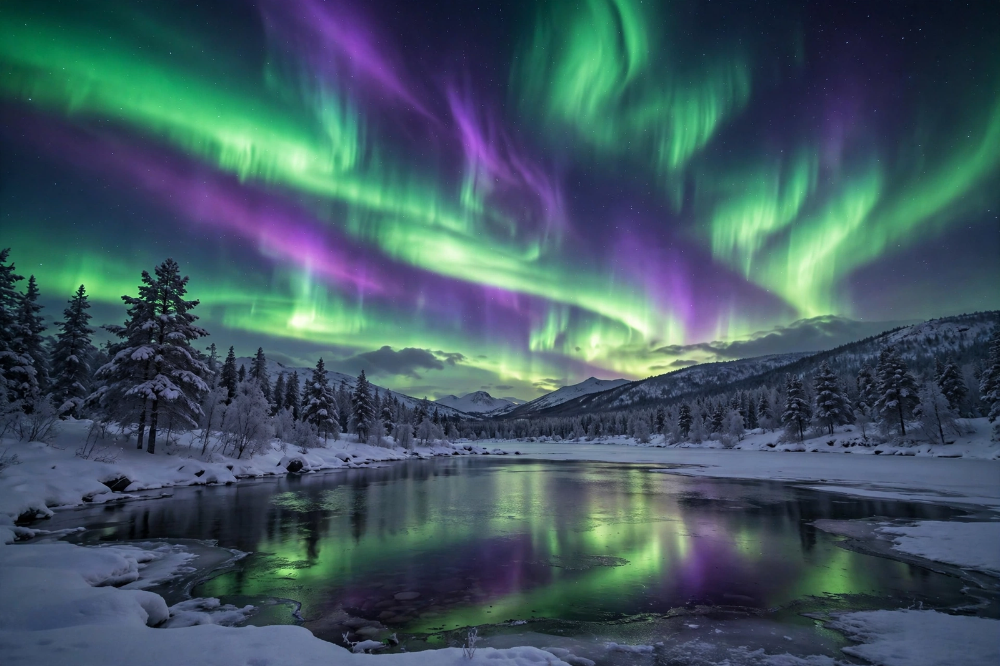

| Geomagnetic storm | |
|---|---|
 | |
| Cause | Coronal mass ejections and high-speed solar wind streams striking Earth's magnetosphere |
| Effects | Auroras, power-grid disturbances, radio and satellite disruption |
| Scale | NOAA G-scale G1 (minor) to G5 (extreme); Kp index 0–9 |
A geomagnetic storm is a temporary disturbance of Earth's magnetosphere caused by energy transferred from the solar wind. The most intense storms are driven by coronal mass ejections (CMEs) — vast clouds of magnetised plasma hurled from the Sun whose embedded magnetic field, if directed southward, reconnects with Earth's field and dumps energy into the magnetosphere over hours or days.
Storms energise the radiation belts, drive spectacular auroras far from the poles, heat and expand the upper atmosphere (increasing satellite drag), disturb high-frequency radio and GPS signals, and induce geomagnetically induced currents in long power lines and pipelines. The Carrington Event of 1859, the largest storm on record, set telegraph equipment sparking and produced auroras visible in the tropics. In March 1989 a severe storm collapsed the Hydro-Québec power grid, blacking out six million people. A major storm in May 2024 produced auroras across mid-latitudes worldwide and disrupted precision-agriculture GPS systems.
Storm intensity is commonly quoted with the planetary K-index (Kp) and the Dst index, and operationally on NOAA's G1–G5 scale. Spacecraft at the L1 Lagrange point, such as DSCOVR and ACE, give forecasters 15–60 minutes of warning of an incoming structure's speed and magnetic orientation.